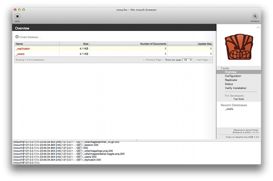

Rcouch
Alternative Apache CouchDB distribution
Install Rcouch
Wiki
Discussion Group
Source & Bugs
rcouch 
rcouch is a custom distribution of couchdb statically linked ausing rebar.
Based on the couchdb code it is tagged from time to time for stability purpose. At some point some supported branch may appear.
RCouch is brought you by the Refuge project.
Features:
- Apache CouchDB based
- Geocouch integrated
- Random doc api
- View changes and replication from views
- Dropbox Databases
- Db Changes
- Validate on read
- rebar
- relocatable
- Fully opensource. All the sources are on refuge GIT repository (http://github.com/refuge) under Apache License 2.
Requirements
- OS supported: Linux, OSX, BSDs (windows support is coming)
- Erlang R15
- Curl
- zip (during build)
- ICU (if not built statically)
- Latest version of rebar installed on your system.
Installation
Installation is pretty simple. Just run the command line:
$ make rel
and it will generate a couch folder in rel/couch. This release is fully relocatable, so you can put it where you want on your system.
To create package for your system run make package . For now we build
packages for OSX, Debian, Redhat & Solaris.
Build rcouchx
rcouchx is a macosx interface for rcouch based on the excellent work of Jan:

To build it, run the command line:
$ make rcouchx
Then launch the rcouchx.app application.
Notes on building a truly distributable package
The package built above will still depend on some libraries from your system, so additional work has to be done to distribute it to older/newer systems.
-
CouchDB will depend on the ICU library version that was present in your system at build time. To easily bundle this library with the package, build with:
$ make rel USE_STATIC_ICU=1 -
Check whether your package depends on Ncurses:
$ ldd ./rel/rcouch/erts-*/bin/erlexec|grep ncursesIf it does, copy the .so file to ./rel/myapp/lib/ or rebuild Erlang without this dependency.
-
Decide whether you need SSL support in your package and check whether it depends on OpenSSL:
$ ldd ./rel/rcouch/lib/ssl-*/priv/bin/ssl_esock|grep 'libcrypto\|libssl'If it does, copy the .so file to ./rel/rcouch/lib/ or rebuild Erlang without this dependency.
If you copied any .so files in the last 2 steps, run this command, so that your app can find the libraries:
$ sed -i '/^RUNNER_USER=/a\\nexport LD_LIBRARY_PATH="$RUNNER_BASE_DIR/lib"' ./rel/rcouch/bin/rcouch
Binding port 80
On most UNIX systems binding port 80 is a privileged operation (requires root). Running Erlang as root is not recommended so some configuration will need to be done so that rcouch can bind port 80.
If you run a recent Linux kernel with capabilities you can give Erlang the privilege using the setcap command (you may need to install a package named lxc or similar to obtain this command).
$ setcap 'cap_net_bind_service=+ep' /path/to/rel/refuge/erts-5.8.5/bin/beam`
$ setcap 'cap_net_bind_service=+ep' /path/to/rel/refuge/erts-5.8.5/bin/beam.smp
On FreeBSD all ports can be made accessible to all users by issuing:
$ sysctl net.inet.ip.portrange.reservedhigh=0